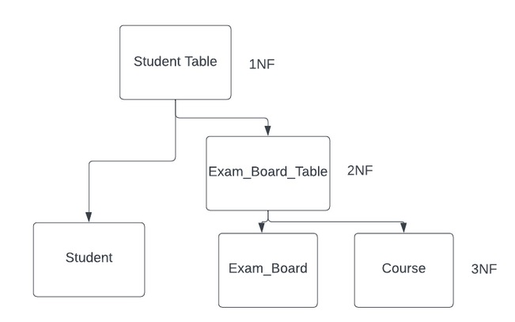

Normalisation Task
The next example explains all steps for doing a data normalization. The Student Table unnormalized (see below) has the following attributes: Student Number,Student Name, Exam Score, Support, Date of Birth, Course Name, Exam Boards and Teacher Name.
The decomposition of the Student Table 1NF relation into 3NF relation is shown in the below figure:

Now, The Normalization Data Tables 1NF into 3NF are shown:
First Normal Form(1NF)
Rules: The attributes must be Single Valued,The Domain of attributes must not change,Every Column/ Attribute must have a Unique Name,The order of Data does not matter.
Second Normal Form (2NF)
Rules: If a relation is in 1NF and all the attributes of the non-primary keys are fully dependent on primary keys, then this relation is known to be in the 2NF.
Student
Exam_Board_Table

Third Normal Form (3NF)
A relation is in the 3NF, if there is no transitive dependency for non-prime attributes as well as it is in the 2NF.
Student
Exam_Board

Course